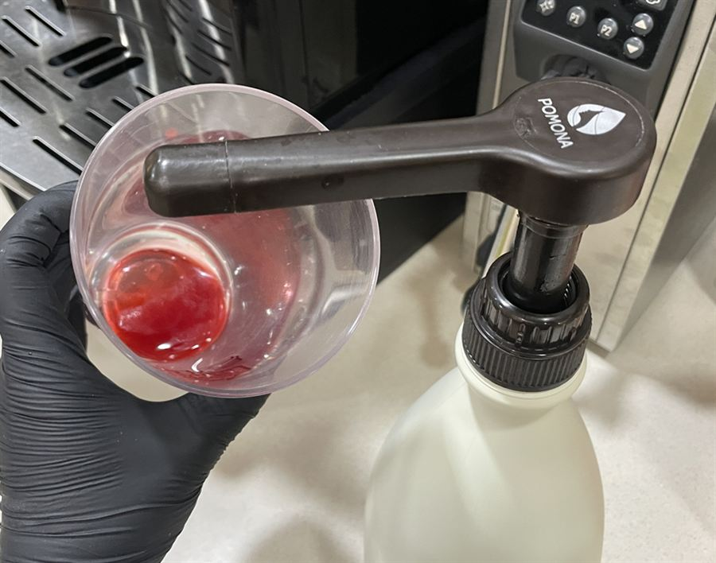
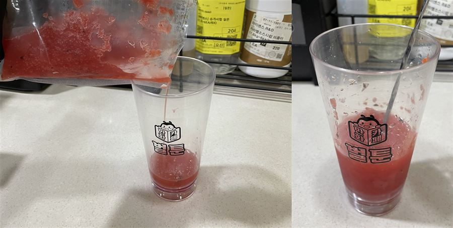
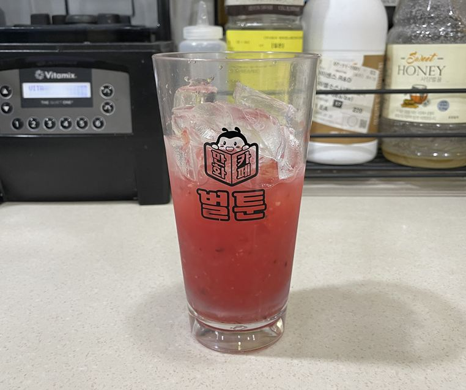
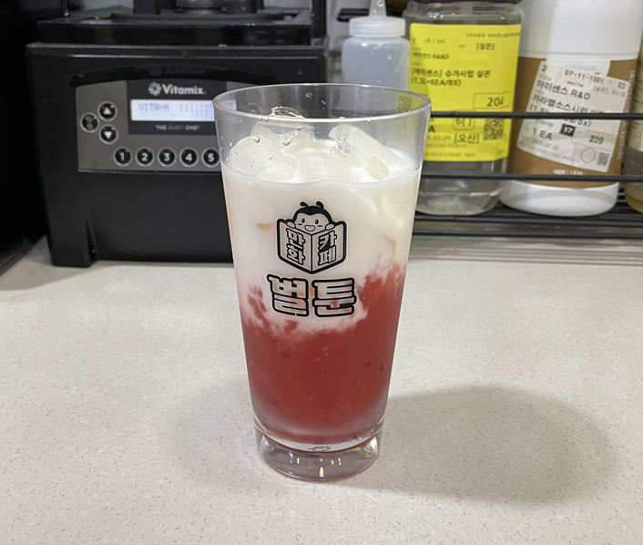
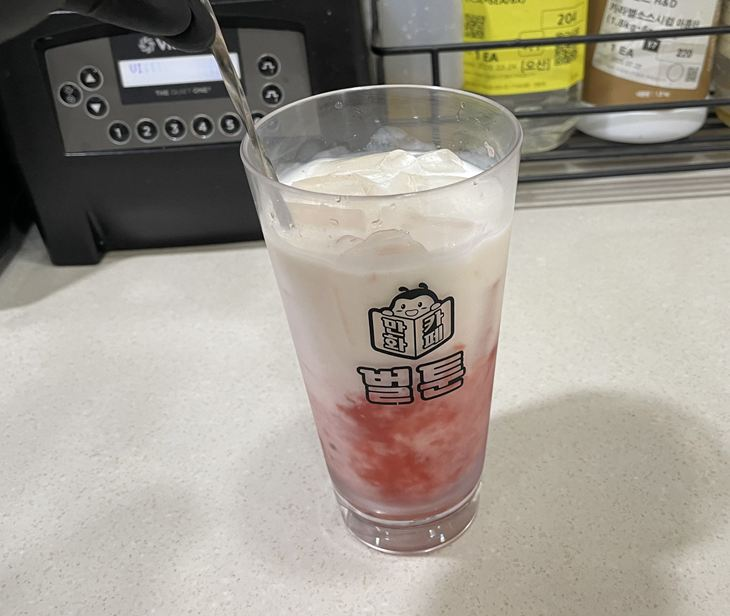
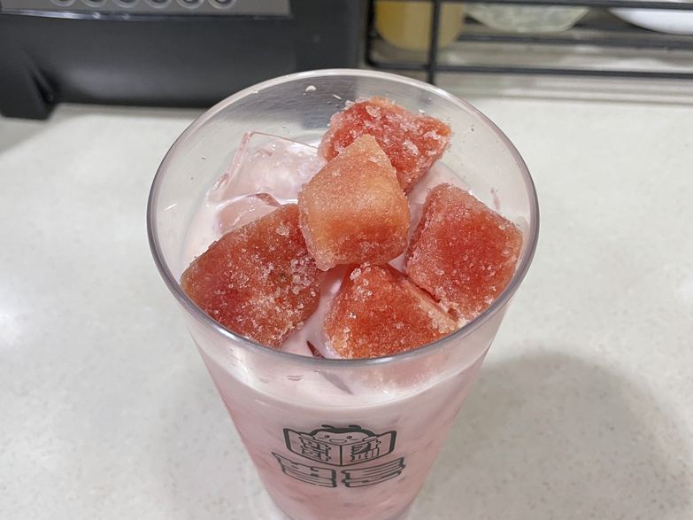
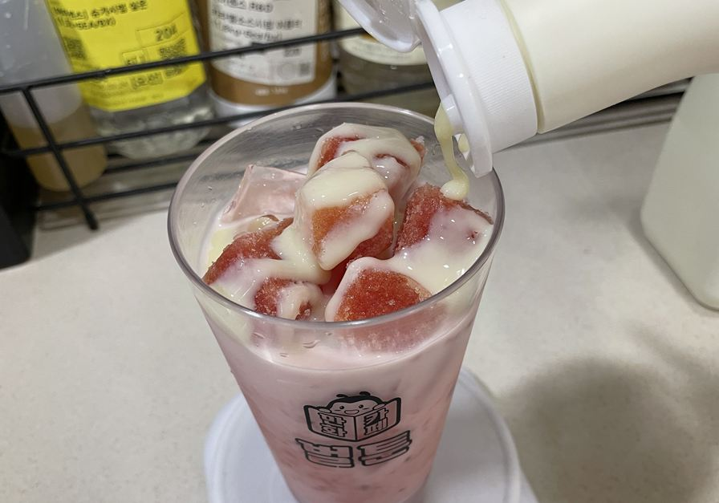
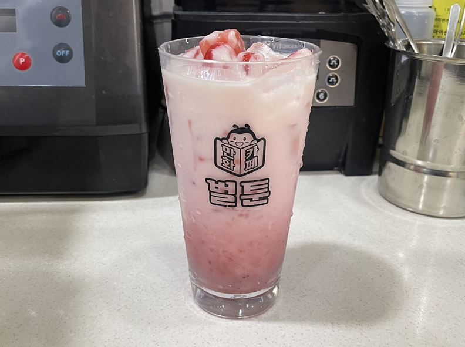

| 메뉴명 | 수박화채라떼 |
|---|---|
| 판매가격 | 6,500원 |
| 원재료 | 냉동 수박주스, 딸기스무디, 우유, 얼음, 연유, 냉동수박 |
| 사용 부자재 | 16oz 아이스컵, 리드뚜껑, 버블티빨대 |
※ 픽업 멘트 : "섞어서 드세요"
제조방법

1
냉동 수박주스 1팩을 700w 전자레인지에 넣고 30초간 돌린다.
(※ 냉장 해동 후 사용 시, 2일 안에 사용해야 함)
냉동 수박주스 1팩을 700w 전자레인지에 넣고 30초간 돌린다.
(※ 냉장 해동 후 사용 시, 2일 안에 사용해야 함)

2
16oz컵에 포모나 딸기스무디 소스 5g을 넣어준다.
(*소스통에 별도로 담아 사용)
16oz컵에 포모나 딸기스무디 소스 5g을 넣어준다.
(*소스통에 별도로 담아 사용)

3
해동한 수박주스 1팩을 넣어준 뒤, 바스푼으로 섞어준다.
해동한 수박주스 1팩을 넣어준 뒤, 바스푼으로 섞어준다.

4
얼음을 컵에 8부(150g) 담아준다.
얼음을 컵에 8부(150g) 담아준다.

5
차가운 우유 100g을 부어준다.
차가운 우유 100g을 부어준다.

6
바스푼으로 가볍게 섞어준다.
바스푼으로 가볍게 섞어준다.

7
냉동 수박 다이스 50g(5~7개)을 올린다.
냉동 수박 다이스 50g(5~7개)을 올린다.

8
수박 위에 연유 7g을 지그재그로 뿌려준다.
수박 위에 연유 7g을 지그재그로 뿌려준다.

9
완성!! 평리드 뚜껑을 덮어주고, 버블티 빨대를 제공한다.
완성!! 평리드 뚜껑을 덮어주고, 버블티 빨대를 제공한다.